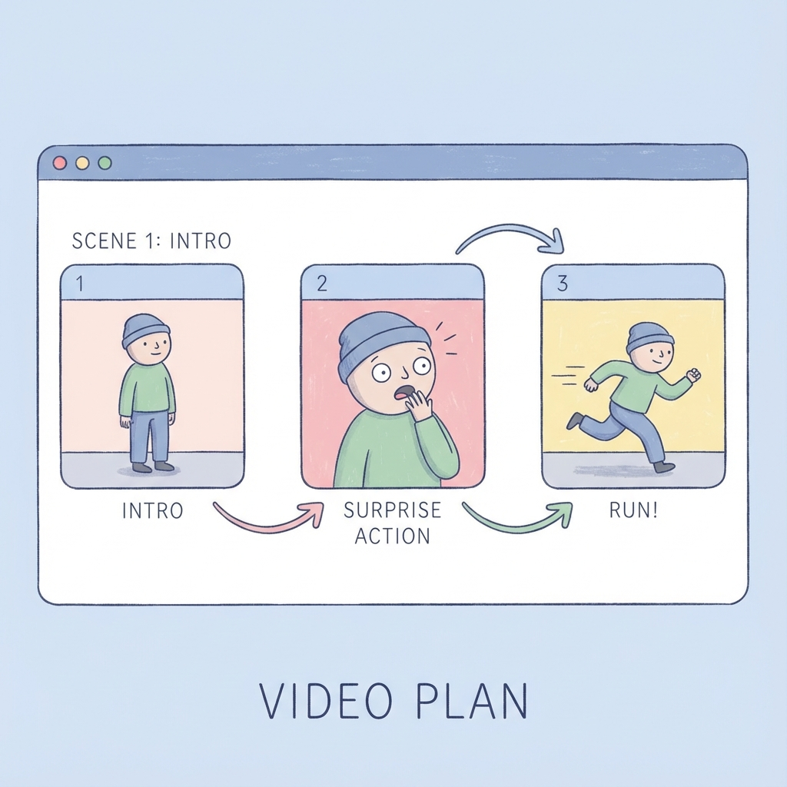
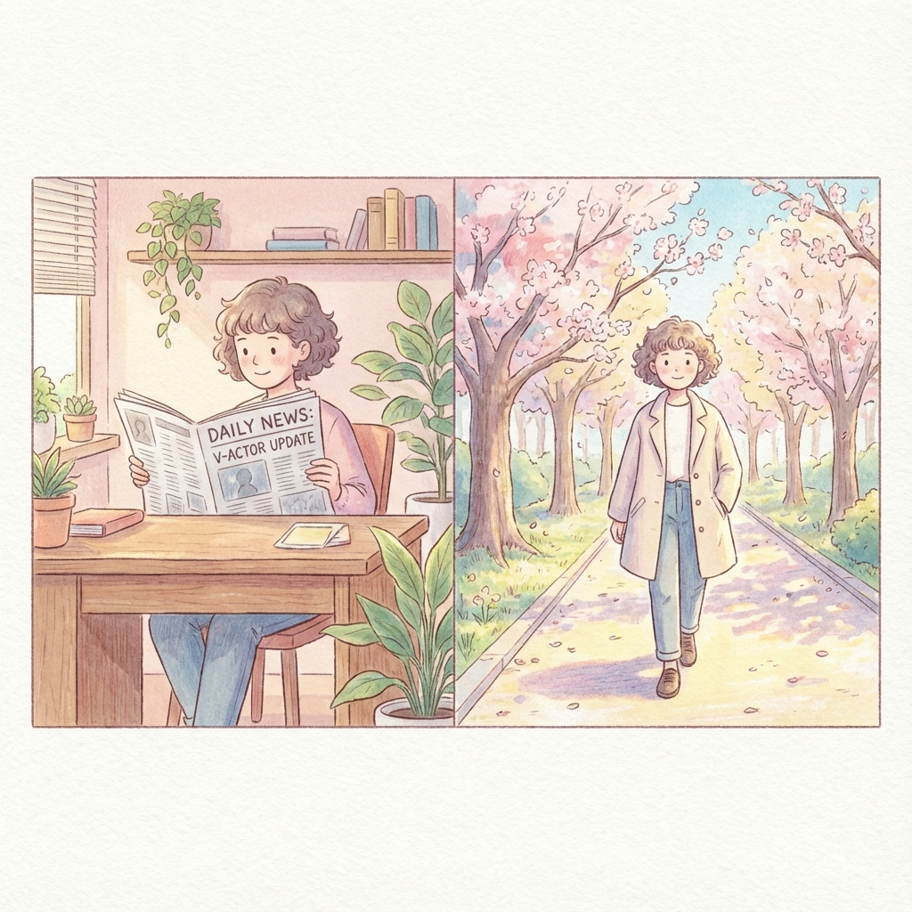

「Sora 2って名前は聞くけど、結局なにが凄いの？」 「動画が作れるって言っても、どうせ違和感があるんでしょ？」
そう思っている方も多いかもしれません。ですが、今回のアップデートは、これまでの「AI動画」の常識を覆す、まさに革命と言える内容でした。
この記事では、Sora 2が具体的にどう進化したのか、そして私たちの仕事や創作活動にどんな影響を与えるのか、専門用語を使わずにわかりやすく解説していきます。
1. 「運任せのガチャ」から「思い通りの演出」へ
これまでの動画生成AIを使っていて、こんな経験はありませんでしたか？ プロンプト（指示文）を入れて生成ボタンを押したものの、出てきた映像はイメージと違う。「惜しい！でもここが変！」と思っても修正できず、また最初からやり直し…。まるでスロットマシン（ガチャ）を回して、大当たりが出るのを祈るような作業でした。
しかし、Sora 2の新機能**「ストーリーボード」**の登場で、この流れが劇的に変わりました。
家を建てるように動画を作る

ストーリーボードで動画の構成を視覚的に管理
ストーリーボード機能は、いわば**「動画の設計図」**です。 いきなり動画を作り始めるのではなく、まず画面上で「1. 主人公が登場」「2. 驚いた顔をする」「3. 走り出す」といった流れ（絵コンテ）を組み立てます。
そしてここからが凄いところ。もし「2. 驚いた顔」のシーンだけが気に入らなければ、その部分だけを修正（リテイク）できるようになったのです。これまでのAIは修正しようとすると動画全体が変わってしまいましたが、Sora 2は前後の流れを保ったまま、ピンポイントで直しがききます。
これはもう「ガチャ」ではありません。監督が俳優に演技指導をするような、**「演出」**が可能になったのです。
2. あなた専属の「バーチャル俳優」が雇える時代

シーンが変わってもキャラクターの顔やスタイルを維持
もう一つの大きな進化が、**「スタイルの多様性」と「キャラクターの一貫性」**です。
これまでAI動画の最大の弱点は、「場面が変わると主人公の顔が別人になってしまう」ことでした。これでは物語（ストーリー）が作れませんよね。 Sora 2では、特定のキャラクターを固定して生成することが可能になりました。
例えば、アニメスタイル。 手書き風のアニメーションで、Aメロでは歩いている主人公が、サビでは激走している。そんなMV（ミュージックビデオ）を作る際も、ちゃんと「同一人物」として描かれます。
あるいは、ニュースキャスタースタイル。 非常にリアルな人物（バーチャルヒューマン）が、まるで本物のニュース番組のように原稿を読み上げる動画も生成可能です。企業の広報担当者やマーケターにとっては、スタジオも機材も使わずに、デスク一つでプロ品質の動画が作れる夢のようなツールになりつつあります。
3. 「25秒」は短い？実はテレビCM１本分！
「でも、作れる動画は最大25秒なんでしょ？ 短くない？」 そう感じる方もいるかもしれません。しかし、普段私たちがテレビで見ているCMは15秒〜30秒です。つまり、プロが数千万円かけて作るテレビCMと同じ長さの映像が、個人で作れるようになったということです。
さらに、先ほど紹介した「ストーリーボード」を使えば、この25秒の動画をいくつも繋ぎ合わせて、数分の作品に仕立て上げることも可能です。TikTokやYouTubeショートなどのSNS動画であれば、Sora 2だけで「完パケ（完成品）」まで持っていけるスペックを備えています。
気になるお値段は？
「そんな高機能なら、お高いんでしょ？」と不安になりますよね。 確かに、システム開発者向けの料金（API）は1本数百円と高額ですが、個人クリエイター向けのプラン（ChatGPT Plus等）であれば、**月額3,000円程度（約20ドル）**で利用可能です。
月額制なら、何度失敗しても追加料金はかかりません。「今月はMVを作るぞ！」と決めて使い倒せば、1シーンあたりのコストは数十円以下。スタジオを借りるコストとは比べ物にならないほどリーズナブルです。
4. 正直な話、まだ「足りない」ところもあります
ここまで良いことばかり書いてきましたが、プロの視点から「まだ発展途上だな」と感じるリアルな弱点もお伝えしておきます。
長編映画はまだ大変
「25秒の壁」があるため、5分、10分の長編を作るには、何度も生成して別の編集ソフトで繋ぎ合わせる根気が必要です。
「微妙な演技」は伝わらない
「悲しい顔」はできますが、「口元だけ笑って目は笑っていない、皮肉な表情」といった小説のような細かいニュアンスは、まだAIには伝わりづらいです。優秀ですが、少し鈍感な新人俳優といったところでしょうか。
文字や指の描写
だいぶ改善されましたが、背景の看板の文字が謎の言語になっていたり、複雑な動きをすると指の本数がおかしくなったりする「AI特有のミス」はまだゼロではありません。